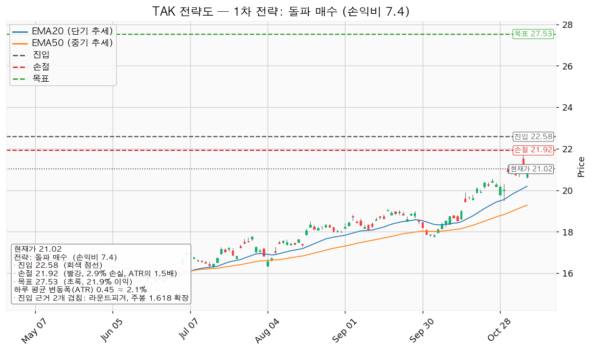
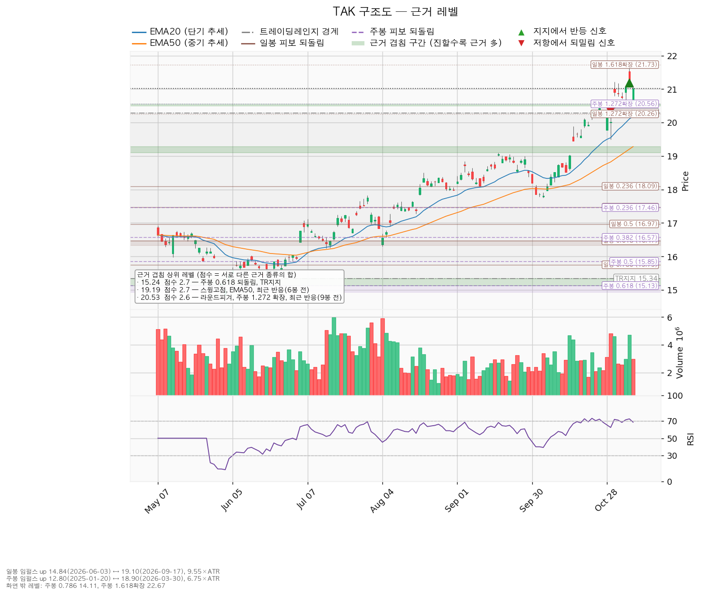
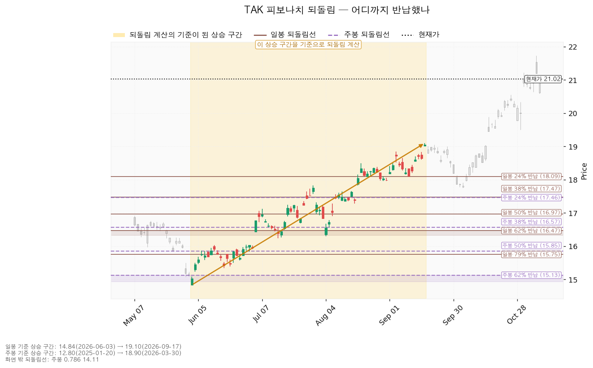
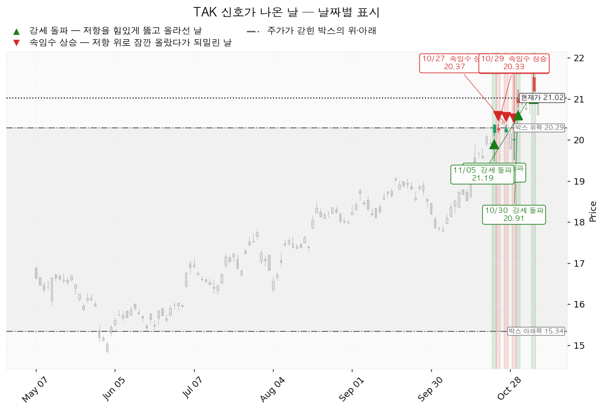

다케다제약(TAK)은 소화기·희귀질환·혈장분획제제·항암·신경과학 의약품을 개발·판매하는 일본 제약사이며, TAK는 뉴욕에 상장된 주식예탁증서입니다.
| 구분 | 가격 | 판정 방식 | 현재 상태 (11/6 종가 21.02달러) |
|---|---|---|---|
| 회복선 (진입 조건) | 22.58달러 | 일봉 종가 돌파 | 미돌파, +7.44% (3.51 ATR). 단기 회복선 19.19달러는 이미 회복 완료 |
| 집행 손절 | 21.92달러 | 장중 저가 터치 | 진입한 경우에만 유효, 미진입이라 지금은 의미 없음 |
| 관망 종료 기준 | 20.50달러 / 2027-01-28 실적 | 20.50달러 아래 일봉 종가, 또는 실적 전 미진입 | 유지 중, -2.47% (1.17 ATR). 닿으면 매수 계획 종료 |
| 확인선 | 19.50달러 | 일봉 종가 돌파 후 되돌림 지지 | 돌파 완료. 박스 상단 20.29달러는 맥락으로만 봄 |
| 폐기선 | 15.34달러 | 이탈 후 3거래일 내 회복 실패(또는 그 전에 14.89달러 아래 종가) + 반등에서 저항 확인 | 유지 중, -27.02% (12.73 ATR), 실무상 작동하지 않음. 미진입자가 볼 선은 관망 종료 기준 |
| 항목 | 내용 |
|---|---|
| 셋업 | 돌파 매수 · 돌파 확인형 |
| 진입 | 22.58달러 일봉 종가 돌파 — 근거 2개 겹침(22.50~22.67달러): 라운드피겨, 주봉 1.618 확장 |
| 손절 | 21.92달러 (진입 대비 -2.96%) — 아래쪽에 겹치는 구간이 없어 진입 기준선에서 ATR의 1.5배 아래 |
| 목표 | 27.53달러에서 전량 매도 (목표 도달, 진입 대비 +21.92%, 11.10 ATR) — 겹침 구간이 없어 박스 높이 4.95달러를 진입가에 더한 값 |
| 손익비 | 1:7.40 (손절 1.50 ATR). 손절이 이미 구조적 손절 규칙 그대로라 구조적 손절 기준도 1:7.40입니다 |
| 엣지 | 모멘텀 — 저항을 돌파하면 그 방향이 이어진다는 전제. 자주 틀리고 소수가 크게 맞는 유형이며, 이 성격은 이 엔진에서 측정한 값이 아닙니다 |

손익비·구조 증명도·근거 겹침을 곱해 대표로 골랐고, 지수 대비 20일 초과수익 +17.79%와 돌파 구간 거래량 1.51배로 순위에 1.15배가 곱해졌지만 대표는 바뀌지 않았습니다. 눌림 후보는 선취형이라 구조가 증명되지 않았고 손익비도 1:5.37 (손절 0.86 ATR)로 낮습니다. 1:7.40의 크기는 목표 쪽 공식에서 나옵니다. 22.50~22.67달러는 라운드피겨와 계산선이고 조회한 753봉 안에서 가격이 반응한 적이 없으며, 27.53달러도 실제 저항이 아닙니다. 목표는 최고 목표주가 25.91달러보다 +6.27% 위이고, 같은 진입·손절로 평균 목표주가 22.95달러까지만 보면 1:0.54입니다. 진입 근거는 모멘텀이지만 집행 정책대로 고정 목표 전량 매도이며 트레일링은 걸지 않습니다. 분할 없이 단일 목표 전량 매도이고, 27.53달러 위 구간은 새 셋업으로 다시 잡습니다.
1. 관찰: 일봉 종가가 22.58달러 아래로 마감. 되돌아 올라오면 속임수 하락일 수 있어 아직 무효가 아닙니다. 신규 진입만 중단합니다. 2. 경고: 이탈 후 3거래일 안에 22.58달러를 종가로 회복하지 못함, 또는 그 전에 일봉 종가가 22.13달러 아래로 마감 (하루 평균 변동폭의 1배만큼 더 밀림) — 둘 중 먼저 오는 쪽. 돌파 전 구간으로 되돌아갈 가능성이 커진 상태입니다. 3. 무효: 반등이 22.58달러에서 막히고 그 아래로 되밀림(지지가 저항으로 전환). 전량 매도 (시나리오 폐기) 후 새 구조가 만들어질 때까지 관망합니다. 장중 일시 이탈은 어느 단계에도 해당하지 않습니다. 집행 손절 21.92달러는 이 판정과 무관하게 별도로 작동합니다. 논지 무효화: 폐기선 15.34달러는 하루 평균 변동폭의 3배를 넘게 떨어져 실무상 무효화 기준으로 작동하지 않습니다. 대신 2027-01-28 실적에서 12월 분기 매출이 기대 1조 2,358억엔에 못 미치고, 영업이익이 전년 동기 1,688억엔을 밑돌고, 영업현금흐름이 전년 동기 3,733억엔을 밑돌면 논지가 깨진 것으로 봅니다.
| 가격대 | 겹치는 것 | 위치 |
|---|---|---|
| 22.50~22.67달러 | 라운드피겨, 주봉 1.618 확장 | 진입 |
| 20.50~20.56달러 | 라운드피겨, 주봉 1.272 확장, 9봉 전 반응 | 관망 종료 기준 |
| 20.26~20.29달러 | 일봉 1.272 확장, 박스 상단 | 다음 지지 |
| 19.50달러 | 스윙저점, 라운드피겨, 6봉 전 반응 | 확인선 |

박스는 전체 753봉 중 180봉을 본 15.34~20.29달러(폭 11.1 ATR)이고 가격이 그 안에 93.9% 머물렀으며, 40봉·90봉 창은 박스로 성립하지 않았습니다. 직전 13.38~16.23달러 구간을 위로 벗어나 들어왔으므로 재축적과 분산이 갈리지 않았습니다. 안쪽 판정은 중립입니다. 지지 테스트 거래량은 줄었지만(5/13 평균의 1.26배, 5/26 1.05배, 6/3 1.07배) 저점은 15.98달러 → 15.84달러 → 14.84달러로 낮아졌고, 상승봉 대 하락봉 거래량비는 1.07입니다. 일봉 되돌림은 6/3 14.84달러~9/17 19.10달러, 주봉은 2025-01-20 12.80달러~2026-03-30 18.90달러 구간으로 쟀고, 현재가는 두 구간의 고점 위에 있습니다. 위쪽 확장은 일봉 1.618 21.73달러, 주봉 1.618 22.67달러입니다. 52주 고가 21.73달러가 일봉 1.618 확장과 같은 가격이고, 손절 21.92달러는 이 고가보다 위에 있어 돌파 뒤 고가까지 되돌리면 손절됩니다. RSI(14일 상승·하락 강도)는 68.60입니다.

속임수 상승이 10/23(20.39달러)·10/27(20.37달러)·10/29(20.33달러)에 나와 국면 후보는 분산입니다. 다만 강세 돌파가 10/22(20.36달러)·10/30(20.91달러)·11/5(21.19달러)에 나왔고 10/30부터 6거래일 연속 박스 상단 위에서 마감해, 분산 후보는 가격으로 확인되지 않았습니다. 11/5 강세 돌파일은 고가 21.73달러를 찍고 그날 저가인 21.19달러에 마감했고, 11/6은 20.62달러로 열려 저가 20.59달러에서 21.02달러까지 회복했습니다.

| 날짜 | 확인할 것 |
|---|---|
| 2027-01-28 (회사 확정 여부 미확인) | 12월 분기 실적. 매출 기대 1조 2,358억엔(1조 2,281억~1조 2,513억, +3.70%). 분기 주당순이익 기대치는 없습니다 |
| 2027년 3월 분기 (날짜 없음) | 매출 기대 1조 1,391억엔(+4.07%). 전년 동기 순손실 3,685억엔의 재발 여부 |
| 다음 회계연도 | 매출 기대 4조 8,135억엔(+2.28%), 주당순이익 198.63엔(+33.61%). 다음 실적 이후의 비용·특허 역풍은 확인할 자료가 없습니다 |
손절 폭 -2.96%에 1% 리스크를 맞추면 계좌의 33.8%가 나오므로 13%로 제한합니다. 계좌 1억원당 1,300만원이고 손절 시 손실은 약 38만원(계좌의 0.38%)입니다. ATR은 주가의 2.12%로 8% 기준 아래지만, 최근 뉴욕 시가 갭이 10/30 +4.95%, 11/5 +2.23%, 11/6 -2.69%로 손절 폭에 가까우므로 손절 체결가가 21.92달러보다 낮을 수 있습니다. 진입 시점에 S&P 500 종가가 200일선 아래면 22.58달러를 넘어도 매수하지 않습니다. 판정은 22.58달러 돌파 매수 대기, 손익비 1:7.40 (손절 1.50 ATR)이며 미달 항목은 상대강도선 신고가입니다.
ATR: 하루 평균 변동폭(14일).
RSI: 일정 기간 상승폭과 하락폭을 비교한 강도 지표.
PER: 주가를 주당순이익으로 나눈 배수.
주식예탁증서: 외국 주식을 대신해 다른 나라 거래소에서 거래되는 증서.